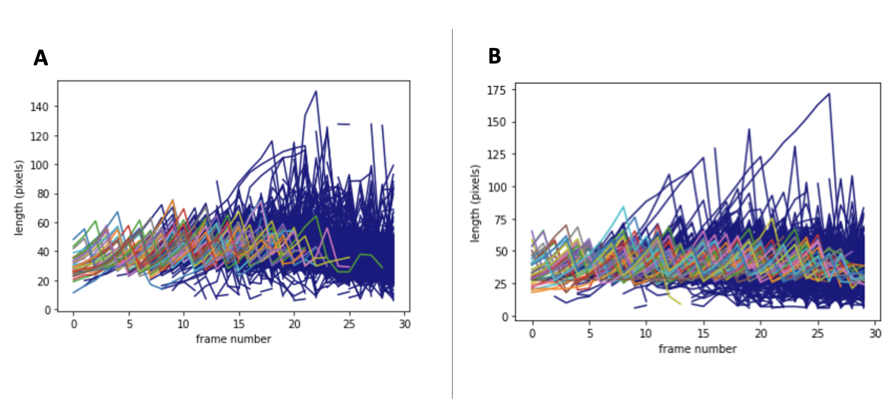
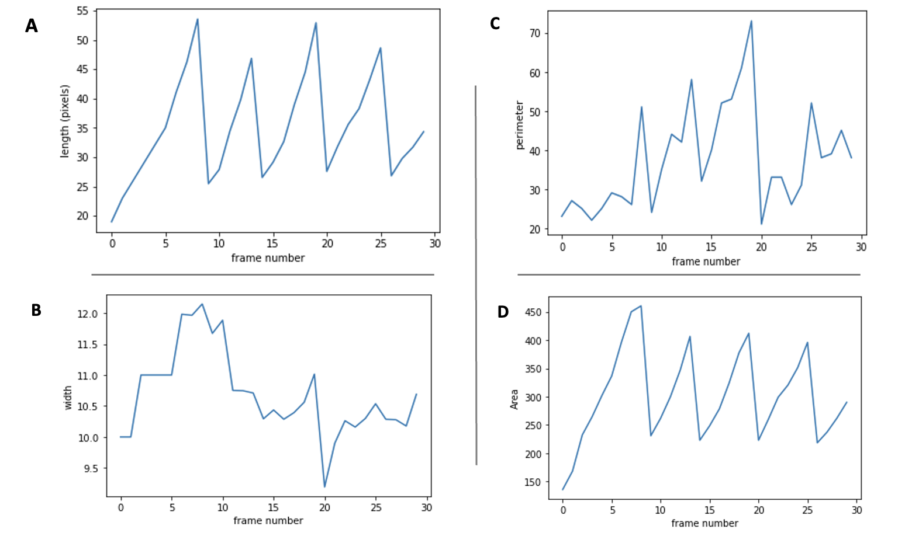
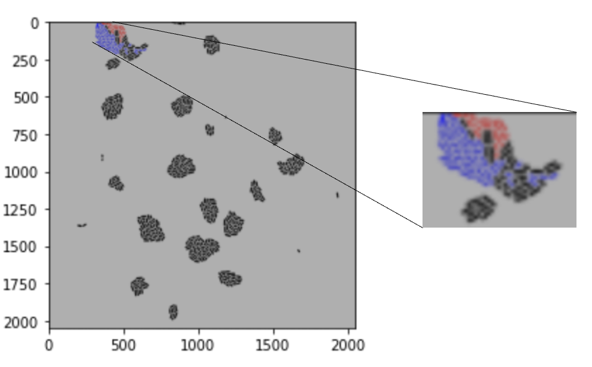
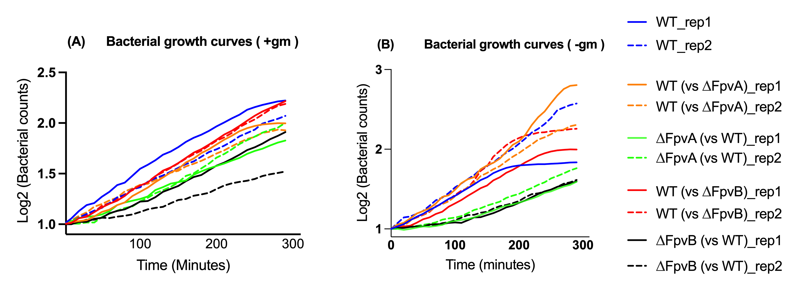

Results
Pipeline optimisation
There is an issue is that the tracking of the initial cells present in the first frame fails and after frame ~32 DeLTA loses track of them and assigns them to other cells or entirely new ones. The field of view tends to jump around a bit between consecutive frames and eventually you get too many tracking errors.
There is the other issue of tracking not working, even after the pipeline is optimised. The below two videos show two scenarious. 1) FpvB presence of gentamicin. 2) Absence of gentamicin. Even after manually formatting the images, one works and the other does not.
video of vsFpvB_GM_Rep1
video of vsFpvB_Absence of Gem, Rep1
Single cell results
Single cell data extracted from the pkl file...sc can be used for a variety of things...hence, data presented here but data for each cell, in each sample is present for further processing by the Jose jimenez lab.
The delta 2 pipeline can also be used/information on x can be extracted to display which cells are descended from either of the first two cells on the last frame.
Bacterial groth rates
Bacterial growth rates graph will go here
Alone vs competition. In the absence of gentamicin, the growth rate of wild-type grown alone versus the growth of wildtype grown in competition with ∆FpvA was not significantly reduced in both replicates 1 and 2 (p = 0.5000, and p = 0.1000, respectively). The growth rate of wildtype alone versus the growth of wildtype grown in competition with ∆FpvB (vsFpvB), was likewise not significantly reduced in both replicates 1 and 2 (p =0.6328, and p = 0.7555, respectively) ). Note, lineage tracking issue with WT rep 1 (see video 1) : plateaus early.Growth rate not affected. -> discussion. In the presence of gentamicin, the growth rate of wild-type alone versus the growth of wildtype grown in competition with ∆FpvA (vsFpvA) was not significantly reduced in both replicates 1 and 2 (p = 0.1000, and p = 0.1531, respectively). When grown in competition with ∆FpvB (vsFpvB) in the presence of gentamicin, the growth rate of wild-type was similarly not significantly reduced compared to when grown on its own, in both replicates 1 and 2 (p = 0.4411, 0.1000, respectively ). -Grown in competition: In the presence of gentamicin, the growth rate of wild-type and ∆FpvA were not significantly different in both replicates 1 and 2 (p = 0.1200 , and p = 0.1000, respectively) when grown in competition. The addition of gentamicin also had minimal effect on wildtype versus ∆FpvB, as the growth rate of wildtype and ∆FpvB when grown in competition, were not significantly different in both replicates 1 and 2 (p = 0.5411, and p = 0.1000, respectivley). In the absence of gentamicin, the datasets for ‘FpvA (vsWT)’ and ‘FpvB (vsWT)’ were not suitable for statistical analysis (one-way ANOVA). The video and lineage tracking files were incomplete, this is likely due to jittering of images, in both replicates. Data has been presented in figure XA for reporting purposes, but this current study was unable to carry out further analysis between the growth rate of wild-type compared to ∆FpvA, when grown together in competition. Similarly, this study was unable to carry out analysis on the difference between the growth rates of ∆FpvB and wildtype when grown together in competition. Overall, these results suggests that when ∆FpvA, and ∆FpvB are cultured alongside wildtype, neither mutants grow significantly faster than wildtype, in the absence or presence of gentamicin. Furthermore, neither mutant significantly reduces the growth rate of wild-type compared to its growth rate when grown alone
Generation times
There is a decrease in the generation time for Wild Type grown in the absence of gentamicin, when compared to WT grown in the presence of gentamicin. Replicate 1 generation time (GT) decreases from 49 minutes to 39 minutes. Replicate 2 time decreases from 53 minutes to 36 minutes. In the presence of gentamicin, when comparing the GT of wildtype grown alone, with WT grown in competition with ∆FpvA, GT of the wildtype decreased in both replicates. From 49 minutes to 41 minutes in replicate 1. And from 53 minutes to 42 minutes in replicate 2. Similarly, when comparing the GT of wildtype grown alone, with WT grown in competition with ∆FpvB, GT of the wildtype decreased in both replicates. From 49 minutes to 42 minutes in replicate 1. And from 53 minutes to 41 minutes in replicate 2. In the absence of gentamicin, when comparing the GT of wildtype grown alone, with WT grown in competition with ∆FpvA, GT of the wildtype decreased in both replicates. From 39 minutes to 30 minutes in replicate 1. And from 36 minutes to 31 minutes in replicate 2. When comparing the GT of wildtype grown alone, with WT grown in competition with ∆FpvB, GT increased from 39 minutes to 41 minutes in replicate 1. For replicate 2, GT increased from 36 minutes to 38 minutes. Overall, the above results suggests that, in the presence of gentamicin, wildtype actually divides quicker when in competition with either mutant, compared to when grown alone. In the absence of gentamicin, WT grows faster when grown in competition with ∆FpvA, compared to when grown alone. However, WT grows slower when grown in competition with ∆FpvB, compared to when grown alone. Hence, both mutants have an effect on WT division times and thus growth rate. Mutants: In the presence of gentamicin, mutant ∆FpvA had a higher generation time (slower growth rate) than WT, in both replicates 1 and 2 (65 mins and 63 minutes, respectively). WT generation time in replicate 1 was 49 minutes, and 53 minutes in replicate 2. Similarly, mutant ∆FpvB had a higher generation time (slower growth rate) than WT, in both replicates 1 and 2: 53 mins and 51 minutes, respectively. WT generation time in replicate 1 was 39 minutes, and 36 minutes in replicate 2. Generation times of the mutants in the absence of gentamicin were not conducted/generated due to the noisy nature of the data. Overall, these results suggest that, in the presence of gentamicin, both mutants, ∆FpvA and ∆FpvB, divide slower and have longer generation times compared to wildtype when grown in competition.